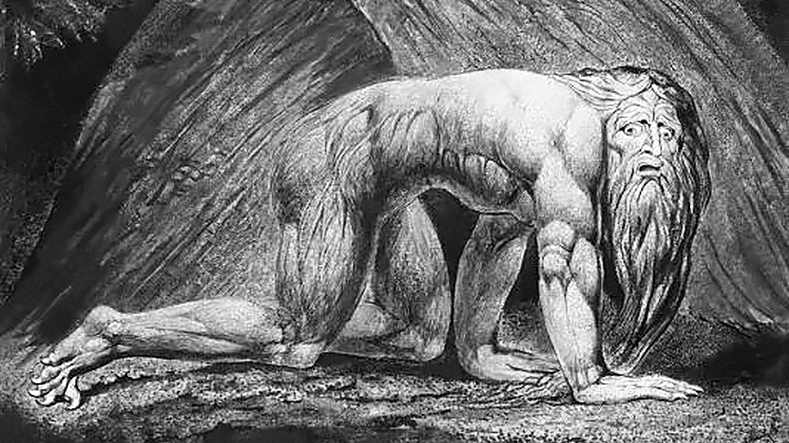

"Kenalilah dirimu sendiri; jadilah tidak subur, dan biarkan bumi menjadi damai setelah kepergianmu."
Itu kalimat penutup Den sidste Messias (Mesias Terakhir), esai sekitar sepuluh halaman karya Peter Wessel Zapffe yang terbit di jurnal Norwegia Janus tahun 1933. Lewat esai ini namanya lekat sama antinatalisme, pandangan bahwa manusia sebaiknya berhenti bikin manusia baru.
Esainya dibuka dengan adegan di zaman purba. Suatu malam, seorang laki-laki terbangun dan untuk pertama kalinya ngeliat dirinya sendiri. Dia sadar dia telanjang di hadapan alam semesta, dan bahkan di badannya sendiri dia kaya orang numpang. Lalu dia keluar bawa busur dan panah, nunggu binatang buruan di kolam tempat mereka biasa minum. Waktu binatang-binatang itu datang, nafsu berburunya udah hilang. Yang dia rasain malah rasa senasib sama semua makhluk yang sama-sama menderita. Dia nggak pulang bawa buruan, dan waktu orang-orang akhirnya nemuin dia, dia udah mati, duduk di pinggir kolam itu.
Buat Zapffe, adegan itu ngerangkum masalah manusia. Binatang juga menderita, tapi biasanya sebatas yang ada di depan mata, kaya sakit waktu luka atau takut waktu dikejar. Manusia bereaksi ke jauh lebih banyak hal. Kita bisa takut sama kematian yang mungkin baru datang puluhan tahun lagi, atau ikut sedih ngeliat penderitaan orang yang nggak pernah kita kenal. Belum lagi tuntutan kita supaya hidup punya makna dan dunia berlaku adil, padahal dunia nggak pernah janji apa-apa. Reaksi kita kegedean dibanding yang sebenarnya dibutuhin buat bertahan hidup, atau istilah gampangnya, kita overreact.
Zapffe nyebut kondisi ini paradoks biologis. Evolusi ngasih manusia lebih dari yang diperlukan, dan kelebihan itu yang bikin kita sadar sekaligus menderita. Buat ngegambarinnya, dia ngambil contoh spesies rusa purba yang menurut dia punah karena tanduknya tumbuh kebesaran. Tanduk yang tadinya berguna lama-lama jadi beban. Waktu orang lagi depresi, kata Zapffe, pikirannya mirip tanduk raksasa itu: megah, tapi nindih pemiliknya sampai nggak bisa bangun.
Kalau kesadaran seberat itu, kenapa manusia nggak punah dari dulu? Jawaban Zapffe, kebanyakan orang belajar nyelametin diri dengan sengaja ngebatasin isi kesadarannya. Caranya dia bagi jadi empat, yaitu isolasi, penjangkaran, pengalihan perhatian, dan sublimasi. Keempatnya bisa muncul dalam campuran apa aja, dan kemungkinan besar kamu udah pernah make semuanya.
Cara pertama, isolasi, nyingkirin pikiran dan fakta yang ganggu soal penderitaan atau kematian dari kesadaran sehari-hari. Orang bisa ngelakuinnya sendiri, lewat sikap mending nggak usah mikir karena mikir cuma bikin bingung, contoh yang Zapffe kutip di esainya. Masyarakat juga ngelakuinnya rame-rame lewat konsensus sosial atau tabu, sampai ada hal-hal yang disepakati buat nggak dibahas.
Cara kedua, penjangkaran, ngaitin hidup kita ke nilai atau institusi yang dianggap kokoh dan abadi, supaya pikiran punya pegangan. Jangkar pertama kita orang tua dan rumah. Pas udah gede, jangkarnya pindah ke yang lebih besar, dan Zapffe nyebut contohnya Tuhan, gereja, negara, moralitas, takdir, hukum kehidupan, bangsa, dan masa depan. Kata Zapffe, perasaan kita ke jangkar itu campur aduk. Kita sayang karena dia nyelametin kita, tapi juga benci karena dia ngebatasin kebebasan kita.
Cara ketiga, pengalihan perhatian, ngebanjirin pikiran pakai stimulus dari luar, hiburan, dan kesibukan, supaya nggak ada ruang buat ngerenungin hal yang berat. Menurut Zapffe kebiasaan ini mulai dari kecil, karena tanpa pengalihan anak kecil aja nggak tahan sama dirinya sendiri. Orang dewasa sebenarnya sama, cuma mainannya ganti. Selama perhatian terus keisi, pertanyaan soal hidup nggak sempat muncul.
Cara keempat, sublimasi, ngolah penderitaan jadi seni, sastra, atau filsafat yang bisa dinikmati dari jarak aman. Penulis tragedi, misalnya, harus ngambil jarak dari rasa tragisnya dulu supaya bisa nulis. Zapffe nganggap ini cara yang paling jarang, dan dia ngaku esainya sendiri contoh khas sublimasi, karena penulisnya nggak sedang menderita dan cuma lagi ngisi halaman buat jurnal. Tulisan ini juga sama aja, sih.
Masalahnya, menurut Zapffe keempat cara itu cuma penenang. Semuanya bikin kita bisa lanjut hidup, tapi akar penderitaannya, kesadaran yang kegedean tadi, tetap di tempatnya. Isolasi jebol begitu kematian masuk ke rumah sendiri, dan jangkar bisa lepas kapan aja. Hiburan ada habisnya, dan Zapffe nulis kalau keputusasaan bisa ngendap tepat di bawah semua kesibukan itu lalu tiba-tiba nyembur keluar jadi tangis. Sublimasi cuma bisa dilakuin segelintir orang.
Dari situ antinatalismenya kebentuk. Kalau hidup cuma bisa ditanggung pakai penenang, ngelahirin anak berarti nambah satu orang lagi yang harus nanggung hal yang sama tanpa pernah ditanya mau atau nggak. Zapffe sengaja nggak punya anak. Di dokumenter NRK tahun 1990 dia bilang keputusan itu sesuai sama pandangan hidupnya, lalu nyindir kebiasaan kita: koin buat pengemis aja dibolak-balik dulu sebelum dikasih, tapi anak dilempar ke kebrutalan kosmos tanpa ragu. Satu kalimat Zapffe di luar esai ini juga sering dikutip, yaitu bahwa punya anak itu kaya "membawa kayu bakar ke rumah yang sedang terbakar."
Kalau dibaca pakai kacamata itu, anak sering jadi bagian dari penjangkaran orang tuanya. Anak dijadiin pegangan dan penerus, dua-duanya kebutuhan orang tua, sementara anak yang nanti harus ngejalanin hidup itu nggak pernah dimintain pendapat. Makanya punya anak bisa kebaca sebagai tindakan egois, karena orang tua dapat jangkar baru sementara anaknya ditaruh di rumah yang lagi terbakar.
Zapffe nggak yakin penenang-penenang itu bakal awet. Menurut dia, peradaban, teknologi, dan standardisasi bikin makin sedikit hal yang bener-bener ngelibatin batin manusia, sampai muncul yang dia sebut pengangguran spiritual. Larinya orang-orang di zamannya ke hiburan, olahraga, dan radio dia anggap gejala dari kekosongan itu. Kalau radio tahun 1930-an aja udah dianggap gejala, aku nggak kebayang dia bakal ngomong apa soal feed di HP kita yang nggak pernah habis.
Gisle R. Tangenes, yang nerjemahin esai ini ke bahasa Inggris buat majalah Philosophy Now tahun 2004, nyatet kalau Zapffe nggak percaya peradaban bisa bertahan selamanya. Teknologi bikin manusia punya lebih banyak waktu luang, dan di waktu luang itu kita akhirnya ketemu setan-setan di kepala masing-masing. Esainya bahkan ngeramal kalau makin banyak jumlah manusia dan makin pengap suasana batinnya, cara-cara perlindungan itu harus makin brutal supaya tetap bekerja, kaya obat penenang yang dosisnya terus dinaikin karena efeknya makin lemah.
Di bagian penutup esainya, Zapffe ngebayangin ujung dari semua ini. Manusia bakal terus mimpiin juru selamat. Juru selamat demi juru selamat bakal datang lalu dibunuh, ada yang dipaku di kayu dan ada yang dirajam di alun-alun, sampai akhirnya muncul Mesias Terakhir. Dia orang pertama yang berani nelanjangin jiwanya dan ngadepin gagasan soal kebinasaan secara utuh, tanpa satu pun penenang.
Nabi dan mesias yang kita kenal biasanya datang bawa janji keselamatan, dan pesannya bikin hidup terus berlanjut. Tangenes nyatet kalau pesan Mesias Terakhir sengaja ngebalik perintah di Kitab Kejadian buat beranak cucu dan memenuhi bumi. Si Mesias bilang cuma ada satu kemenangan dan satu jalan keluar, yaitu kepunahan sukarela. Manusia berhenti punya anak, lalu generasi terakhir hidup sampai habis. Kalimat yang dia ucapin waktu suaranya nyampe ke seluruh dunia adalah kalimat di awal tulisan ini.
Itulah inti manifesto antinatalis Zapffe, dan susunan kalimatnya nyambung sama keseluruhan esai. "Kenalilah dirimu sendiri" balik lagi ke si pemburu purba yang pertama kali ngeliat dirinya. "Jadilah tidak subur" itu jalan keluar yang ditawarin. Bumi yang ditinggal manusia itu hasil akhirnya, dan Zapffe memang nganggap bumi tanpa penghuni bukan hal yang perlu disesali.
Reaksi manusia di esai itu brutal. Begitu Mesias Terakhir selesai ngomong, massa dari segala bangsa nyerbu dia, dipimpin para pembuat empeng dan bidan, lalu ngubur dia di bawah kuku-kuku mereka. Yang maju paling depan orang-orang yang hidupnya bergantung sama kelahiran bayi. Kalimat terakhir esainya bilang Mesias Terakhir itu keturunan si pemanah di pinggir kolam, laki-laki di adegan pembuka tadi, kaya anak dari bapaknya.